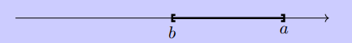
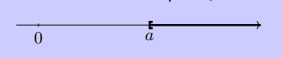
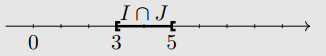
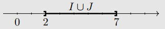

\(C01-02\) Intervalles
Intervalles de nombres réels
Définition
Soient \(a\) et \(b\) deux nombres réels tels que \(a \leqslant b\).
- On appelle intervalle fermé \([a;b]\) l’ensemble des nombres réels \(x\) tels que \(a\leqslant x\leqslant b\).

- On appelle intervalle ouvert \(]a;b[\) l’ensemble des nombres réels \(x\) tels que \(a<x<b\).

- On définit de même les intervalles \([a;b[\) et \(]a;b]\).
- On note \([a;+\infty[\) l’ensemble des nombres réels \(x\) tels que \(x\geqslant a\).

- On note \(]a;+\infty[\) l’ensemble des nombres réels \(x\) tels que \(x>a\).

- On définit de même \(]- \infty;a]\) et \(]-\infty;a[\).
Remarques
- Le symbole \(+\infty\) se lit " Plus l'infini ".
- Le symbole \(-\infty\) se lit " Moins l'infini ".
Représenter des intervalles
Ecrire les inégalités suivantes sous la forme d'un intervalle, puis représenter cet intervalle sur la droite des réels :
- \(x\leqslant 5\)
- \(x>-3\)
- \(2<x<5\)
- \(-4\leqslant x \leqslant -3\)
- \(-3\leqslant x < 8\)
- \(-2< x \leqslant 0\)
- \(]-\infty ; 5]\)
- \(]-3 ; +\infty[\)
- \(]2;5[\)
- \([-4;-3]\)
- \([-3;8[\)
- \(]-2;0]\)
Appartient ou pas ?
Compléter avec un symbole \(\in\) ou \(\notin\) :
- \(-2 \dots [-2; 1[\)
- \(-3 \dots [-5; -1[\)
- \(-\dfrac{26}{5} \dots ]-5; -4[\)
- \(4 \dots [-3; 4[\)
- \(2\pi \dots [7;8]\)
- \(0 \dots \mathbb{R}\)
- \(0 \dots \mathbb{R}^*\)
- \(-2 \in [-2; 1[\)
- \(-3 \in [-5; -1[\)
- \(-\dfrac{26}{5} \notin ]-5; -4[\)
- \(4 \notin [-3; 4[\)
- \(2\pi \notin [7;8]\)
- \(0 \in \mathbb{R}\)
- \(0 \notin \mathbb{R}^*\)
Travailler les représentations
Recopier et compléter :

A venir....
Unions et intersections d'intervalles
Définition
Soient \(I\) et \(J\) deux intervalles.
- L’intersection de \(I\) et \(J\) est l’ensemble des réels qui appartiennent à la fois à \(I\) \textbf{ET} à \(J\). On note cet ensemble \(I \cap J\).
- La réunion de \(I\) et \(J\) est l’ensemble des réels qui appartiennent à \(I\) \textbf{OU} à \(J\). On note cet ensemble \(I \cup J\).
Remarques
- La notation \(\cap\) se lit \og inter \fg. D'où \(I \cap J\) se lit \og \(I\) inter \(J\) \fg.
- La notation \(\cup\) se lit \og union \fg. D'où \(I \cup J\) se lit \og \(I\) union \(J\) \fg.
- Parfois, il n'y a aucun élément qui appartiennent à la fois à \(I\) et \(J\). L'intersection est donc \textbf{vide}, et on note \(\emptyset\) l'ensemble vide. Dans ce cas \(I \cap J = \emptyset\).
Exemple
On considère les intervalles \(I=[3;7]\) et \(J=]2; 5[\).

- L'ensemble \(I\cap J\) est \([3;5[\).

- L'ensemble \(I\cup J\) est \(]2;7]\).

Utiliser les notations \(\cap\) et \(\cup\)
R\'eduire sous la forme d'un seul intervalle si possible et représenter sur la droite des réels :
- \(]-3;7] \cap ]-2;8[\)
- \(]-4;3] \cap [-2;3,5[\)
- \([-7;4[ \cup ]-3;5]\)
- \(]-3;5] \cup [-1;2]\)
- \([-6;6]\cup[-2;2]\)
- \(]-\infty;2[ \cap ]1;+\infty[\)
- \(]-\infty;-1] \cup ]2;6]\)
- \([-5;3] \cap [6;8]\)
- \(]-3;7] \cap ]-2;8[ = ]-2;7]\)
- \(]-4;3] \cap [-2;3,5[ = [-2;3]\)
- \([-7;4[ \cup ]-3;5] = [-7;5]\)
- \(]-3;5] \cup [-1;2] = ]-3;5]\)
- \([-6;6]\cup[-2;2] = [-6;6]\)
- \(]-\infty;2[ \cap ]1;+\infty[ = ]1;2[\)
- \(]-\infty;-1] \cup ]2;6] = ]-\infty;-1] \cup ]2;6]\)
- \([-5;3] \cap [6;8] = \emptyset\)
Ensemble vide
L'ensemble vide est noté \(\emptyset\).
Travailler les inéquations et les intervalles
Compléter en s'aidant de la méthode donnée dans l'exemple ci-dessous.
Exemple
On a les équivalences :
| \(x \in [1;2]\) | \(\Longleftrightarrow\) | \(1 \leqslant x \leqslant 2\) | par définition |
|---|---|---|---|
| \(\Longleftrightarrow\) | \(3 \leqslant 3x \leqslant 6\) | en multipliant chaque membre de l'inégalité par \(3\) | |
| \(\Longleftrightarrow\) | \(3x \in [3;6]\) | par définition |
d'où \(x \in [1;2]\) si et seulement si \(3x \in [3;6]\)
- \(x \in [7;20]\) si et seulement si \(7x \in \dots\)
- \(x \in ]-1;3]\) si et seulement si \(x+4 \in \dots\)
- \(x \in [2;6]\) si et seuelemnt si \(8-x \in \dots\)
- \(x \in \dots\) si et seulement si \(x+6 \in ]3 ; +\infty[\)
- \(x \in \dots\) si et seulement si \(-2x \in [4 ; +\infty[\)
- \(x \in \dots\) si et seulement si \(4x+3 \in [-6;5]\)
- \(x \in [7;20]\) si et seulement si \(7x \in [49;140]\)
- \(x \in ]-1;3]\) si et seulement si \(x+4 \in ]3;7]\)
- \(x \in [2;6]\) si et seuelemnt si \(8-x \in [2;6]\)
- \(x \in ]-3 ; +\infty[\) si et seulement si \(x+6 \in ]3 ; +\infty[\)
- \(x \in ]-\infty ; -2]\) si et seulement si \(-2x \in [4 ; +\infty[\)
- \(x \in [-\dfrac{9}{4};2]\) si et seulement si \(4x+3 \in [-6;5]\)
Représenter sous la forme d'intervalles
- \(y>-3\) et \(y<4\)
- \(y>-3\) ou \(y<4\)
- \(y \leqslant \dfrac{1}{3}\) et \(y \leqslant \dfrac{1}{2}\)
- \(y \leqslant \dfrac{1}{3}\) ou \(y \leqslant \dfrac{1}{2}\)
A venir
Résolutions d'équations du premier degré
-
Résoudre dans \(\mathbb{R}\) chacune des équations suivantes :
-
\(3x -6 =0\)
- \(3x -4 = 0\)
- \(-3x +64 = 19\)
- \(-2(x+5)=-8\)
- \(3x -\pi=0\)
-
\(\dfrac{x-8}{3}=-4\)
-
Lesquelles de ces 4 équations sont résolubles dans \(\mathbb{Z}\) ? Dans \(\mathbb{Q}\) ?
A venir
Résolutions d'inéquations du premier degré
Résoudre les inéquations suivantes et présenter le résultat sous la forme d'un intervalle :
- \(3x -6 >0\)
- \(3x -4 \leqslant 0\)
- \(-3x +64 < 19\)